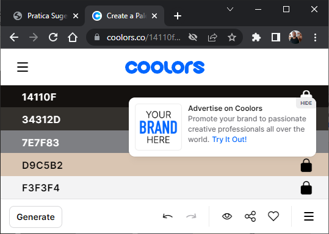

Atividade Sugerida 12
1º Objetivo: Utilizar o site coolors.co para conhecer sugestões de paletas de cores e escolher uma.
Outros dois sites são: color.adobe.com/pt/create/color-wheel e paletadecores.com
Resolução:
2º Objetivo: Exportar o código gerado anteriormente para um novo arquivo CSS. Criar um seletor ":root" e terminar o código como no exemplo.
Resolução:
Folha de estilos3º Objetivo: Criar uma página com o estilo criado anteriormente.
Resolução:
Página com os estilos aplicados4º Objetivo: Aplicar textura de plano de fundo se preferir e bordas horizontais no cabeçalho e no rodapé utilizando a paleta de cores. Utilizar https://www.transparenttextures.com para texturas.